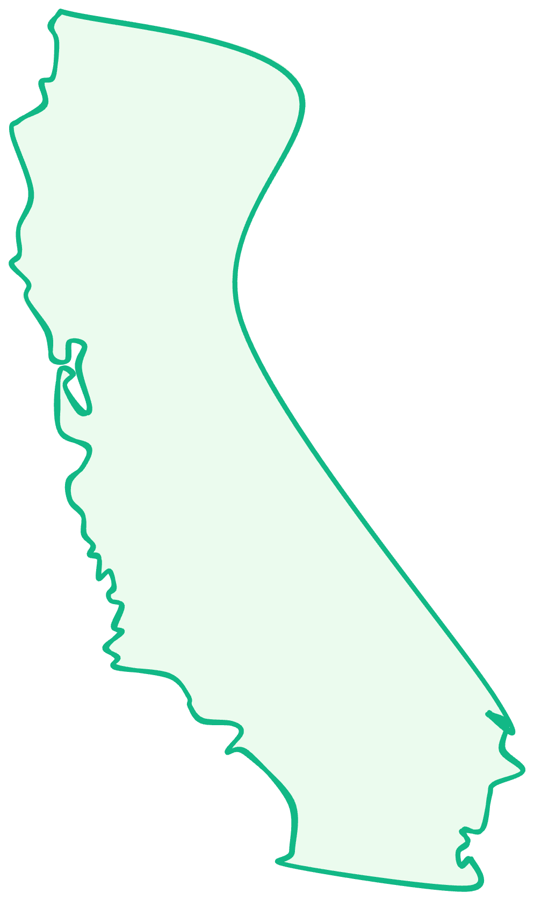
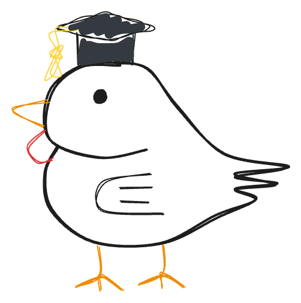

Teaching Statement
I come from a Filipino American background and am the first engineer in my immediate family. I completed my undergraduate education at California State University, Fresno, a teaching-focused institution that serves as the primary engine of educational opportunity within our city.
I witnessed how teaching-focused education creates opportunities for social mobility in underserved communities. At the same time, I became aware of the structural bottlenecks, especially when it came to students finding mentorship guiding them toward an engineering PhD.
As the first in my family to pursue graduate studies, navigating these challenges has directly shaped my approach to teaching. I am committed to advocating for greater accessibility and intentional support for students who fall outside the traditional target audience of their institution’s resources. Being from the California State University system, I consider it a part of my mission to ensure that students like us are not overlooked in the pathways to advanced study.



Experience
Instructional
NSF S-STEM Peer Mentor
2024–2025
“Enhanced Engineering Education for Underserved Communities of the San Joaquin Valley" initiative. Mentored two cohorts of underclassmen engineering students (15-20 each) + 1:1 weekly tutoring sessions.
Grader
2024–2025
Graded free response problem sets for upper-division courses (signals, circuits, & EM).
Supplemental Instruction Leader
2022–2023
Facilitated collaborative sessions for historically high-fail courses (ARM Assembly, C++).
Outreach
CSU Fresno Chapter President, Society of Asian Scientists and Engineers
2023–2025
Revitalized dormant chapter. Enabled 60+ students to attend funded conferences.
Capstone Project Mentor
2025
Guided Edison High School team, introducing core signals concepts (noise, frequency, filtering) for an audio cancellation system.
1st & 2nd Year Representative, LCOE Honors Student Council
2023, 2024
Scholarship finalist interviewer and social event organizer. Coordinated engineering outreach workshops for local K-12 schools (Juan Herrera Elementary, CART).
